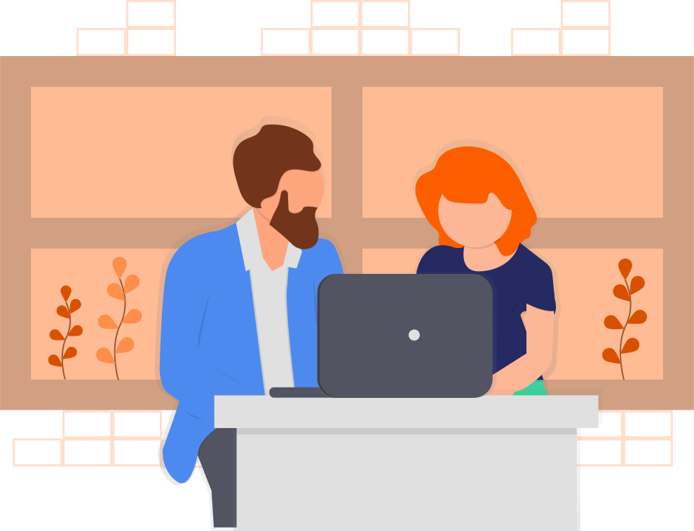
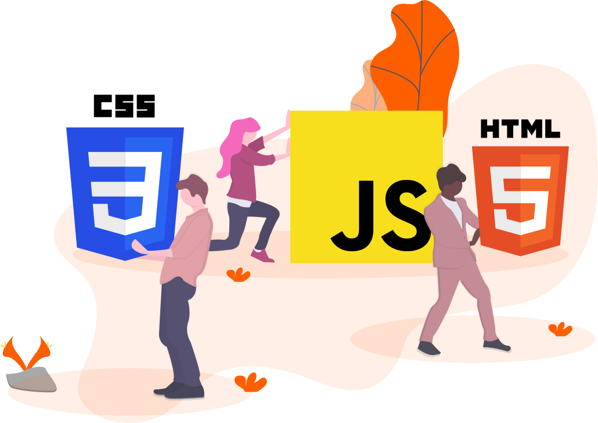
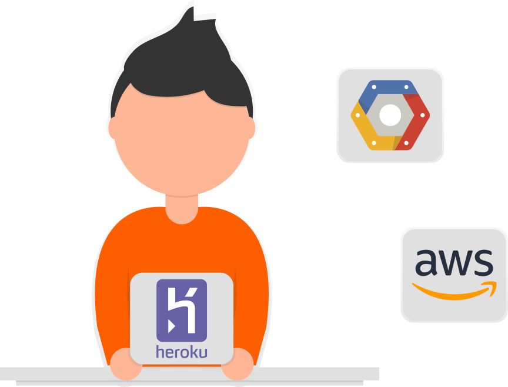

Colin Dismuke is a full stack developer ⚒️️️. He uses code to bring clarity 🔍 to complex ⚛️ problems and creates solutions 💡 that put people 🌍 first.

What skills does he have?

Frontend
- HTML/CSS/JS
- React + Redux

Backend
- MongoDB
- TDD
- RESTful APIs
- Python

Ocean Engineer
- ANSYS AQWA
- Orcaflex
- Frequency/time domain analysis
- Fluid mechanics/dynamics
As an ocean engineer, Colin worked in many harsh environments ranging from storms raging in the middle of the Gulf of Mexico to blazing temperatures of the west coast of Australia to an Aeron chair in Houston. Today, he's bolstering his many years of traditional schooling with Lambda School.
Experience
Work
Staff Engineer
Delmar Systems, Inc.
Graduate Research Assistant
Texas A&M
Project Engineer
Superior Energy Services
Project Engineer, Intern
Transocean
Education
Full Stack Web
Lambda School, 2019
M.S.
Ocean Engineering
Texas A&M, 2012
B.S.
Ocean Engineering
Texas A&M, 2010